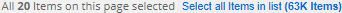

Richiedi modifiche alla documentazione
Richiedi modifiche alla documentazione Modifica questa pagina
Modifica questa pagina Scopri come collaborare
Scopri come collaborareGestione dei dati privati
Collaboratori
La classificazione BlueXP offre diversi modi per gestire i dati privati. Alcune funzionalità semplificano la preparazione alla migrazione dei dati, mentre altre funzionalità consentono di apportare modifiche ai dati.
-
È possibile copiare i file in una condivisione NFS di destinazione se si desidera creare una copia di determinati dati e spostarli in una posizione NFS diversa.
-
È possibile clonare un volume ONTAP in un nuovo volume, includendo solo i file selezionati dal volume di origine nel nuovo volume clonato. Ciò è utile per le situazioni in cui si esegue la migrazione dei dati e si desidera escludere alcuni file dal volume originale.
-
È possibile copiare e sincronizzare i file da un repository di origine a una directory in una posizione di destinazione specifica. Questa funzione è utile per le situazioni in cui si esegue la migrazione dei dati da un sistema di origine a un altro mentre è ancora presente un’attività finale sui file di origine.
-
Puoi spostare i file di origine che la classificazione BlueXP sta scansionando in qualsiasi condivisione NFS.
-
È possibile eliminare i file che sembrano insicuri o troppo rischiosi da lasciare nel sistema di storage o che sono stati identificati come duplicati.

|
|
Copia dei file di origine
È possibile copiare qualsiasi file di origine sottoposto a scansione dalla classificazione BlueXP. Esistono tre tipi di operazioni di copia a seconda di ciò che si sta cercando di ottenere:
-
Copiare file da volumi o origini dati uguali o diversi in una condivisione NFS di destinazione.
Questo è utile se si desidera creare una copia di determinati dati e spostarli in una posizione NFS diversa.
-
Clonare un volume ONTAP in un nuovo volume nello stesso aggregato, ma includere solo i file selezionati dal volume di origine nel nuovo volume clonato.
Ciò è utile per le situazioni in cui si esegue la migrazione dei dati e si desidera escludere alcuni file dal volume originale. Questa azione utilizza "FlexClone di NetApp" funzionalità che consente di duplicare rapidamente il volume e rimuovere i file * non selezionati*.
-
Copiare e sincronizzare i file da un singolo repository di origine (volume ONTAP, bucket S3, condivisione NFS, ecc.) a una directory in una destinazione specifica (destinazione).
Ciò è utile per le situazioni in cui si esegue la migrazione dei dati da un sistema di origine a un altro. Dopo la copia iniziale, il servizio sincronizza i dati modificati in base alla pianificazione impostata. Questa azione utilizza "Copia e sincronizzazione NetApp BlueXP" funzionalità per copiare e sincronizzare i dati da un’origine a una destinazione.
Copia dei file di origine in una condivisione NFS
Puoi copiare i file di origine che la classificazione BlueXP sta scansionando su qualsiasi condivisione NFS. La condivisione NFS non deve essere integrata con la classificazione BlueXP, devi solo conoscere il nome della condivisione NFS dove tutti i file selezionati verranno copiati nel formato <host_name>:/<share_path>.

|
Non è possibile copiare i file che risiedono nei database. |
-
Per copiare i file, è necessario disporre del ruolo account Admin (Amministratore account) o Workspace Admin (Amministratore area di lavoro).
-
La copia dei file richiede che la condivisione NFS di destinazione consenta l’accesso dall’istanza di classificazione BlueXP.
-
È possibile copiare da 1 a 100,000 file alla volta.
-
Nel riquadro Data Investigation Results (risultati analisi dati), selezionare il file o i file da copiare e fare clic su Copy (Copia).

-
Per selezionare singoli file, selezionare la casella corrispondente a ciascun file (
 ).
). -
Per selezionare tutti i file nella pagina corrente, selezionare la casella nella riga del titolo (
 ).
). -
Per selezionare tutti i file su tutte le pagine, selezionare la casella nella riga del titolo (
), quindi nel messaggio a comparsa 
, Fare clic su Seleziona tutti gli elementi nell’elenco (xxx elementi).
-
-
Nella finestra di dialogo Copy Files, selezionare la scheda Regular Copy.

-
Immettere il nome della condivisione NFS in cui verranno copiati tutti i file selezionati nel formato `<host_name>:/<share_path>`E fare clic su Copia.
Viene visualizzata una finestra di dialogo con lo stato dell’operazione di copia.
È possibile visualizzare l’avanzamento dell’operazione di copia in "Riquadro Actions Status (Stato azioni)".
Nota: È anche possibile copiare un singolo file quando si visualizzano i dettagli dei metadati di un file. Fare clic su Copy file (Copia file).

Clonare i dati del volume in un nuovo volume
È possibile clonare un volume ONTAP esistente sottoposto a scansione dalla classificazione BlueXP utilizzando la funzionalità NetApp FlexClone. Ciò consente di duplicare rapidamente il volume includendo solo i file selezionati. Ciò è utile se si stanno migrando i dati e si desidera escludere alcuni file dal volume originale o se si desidera creare una copia di un volume per il test.
Il nuovo volume viene creato nello stesso aggregato del volume di origine. Assicurarsi di disporre di spazio sufficiente per questo nuovo volume nell’aggregato prima di avviare questa attività. Se necessario, contattare l’amministratore dello storage.
Nota: i volumi FlexGroup non possono essere clonati perché non sono supportati da FlexClone.
-
Per copiare i file, è necessario disporre del ruolo account Admin (Amministratore account) o Workspace Admin (Amministratore area di lavoro).
-
Selezionare un minimo di 20 file.
-
Tutti i file selezionati devono provenire dallo stesso volume e il volume deve essere online.
-
Il volume deve provenire da un sistema Cloud Volumes ONTAP o ONTAP on-premise. Al momento non sono supportate altre origini dati.
-
La licenza FlexClone deve essere installata sul cluster. Questa licenza viene installata per impostazione predefinita sui sistemi Cloud Volumes ONTAP.
-
Nel riquadro analisi dati, creare un filtro selezionando un singolo ambiente di lavoro e un singolo repository di storage per assicurarsi che tutti i file provengano dallo stesso volume ONTAP.

Applicare eventuali altri filtri in modo da visualizzare solo i file che si desidera clonare nel nuovo volume.
-
Nel riquadro dei risultati dell’analisi, selezionare i file che si desidera clonare e fare clic su Copy (Copia).
-
Per selezionare singoli file, selezionare la casella corrispondente a ciascun file (
). -
Per selezionare tutti i file nella pagina corrente, selezionare la casella nella riga del titolo (
). -
Per selezionare tutti i file su tutte le pagine, selezionare la casella nella riga del titolo (
), quindi nel messaggio a comparsa , Fare clic su Seleziona tutti gli elementi nell’elenco (xxx elementi).
-
-
Nella finestra di dialogo Copy Files, selezionare la scheda FlexClone. Questa pagina mostra il numero totale di file che verranno clonati dal volume (i file selezionati) e il numero di file che non vengono inclusi/cancellati (i file non selezionati) dal volume clonato.

-
Inserire il nome del nuovo volume e fare clic su FlexClone.
Viene visualizzata una finestra di dialogo con lo stato dell’operazione di clonazione.
Il nuovo volume clonato viene creato nello stesso aggregato del volume di origine.
È possibile visualizzare lo stato di avanzamento dell’operazione di clonazione in "Riquadro Actions Status (Stato azioni)".
Se inizialmente è stato selezionato Map All Volumes (mappatura di tutti i volumi) o Map & Classify All Volumes (mappatura e classificazione di tutti i volumi) quando è stata attivata la classificazione BlueXP per l’ambiente di lavoro in cui risiede il volume di origine, la classificazione BlueXP eseguirà automaticamente la scansione del nuovo volume clonato. Se inizialmente non si è utilizzata una di queste selezioni, è necessario eseguire la scansione di questo nuovo volume "attivare manualmente la scansione sul volume".
Copia e sincronizzazione dei file di origine su un sistema di destinazione
È possibile copiare i file di origine che la classificazione BlueXP sta scansionando da qualsiasi origine dati non strutturata supportata in una directory in una posizione di destinazione specifica ("Posizioni di destinazione supportate dalla copia e dalla sincronizzazione BlueXP"). Dopo la copia iniziale, tutti i dati modificati nei file vengono sincronizzati in base alla pianificazione configurata.
Ciò è utile per le situazioni in cui si esegue la migrazione dei dati da un sistema di origine a un altro. Questa azione utilizza "Copia e sincronizzazione NetApp BlueXP" funzionalità per copiare e sincronizzare i dati da un’origine a una destinazione.
|
|
Non puoi copiare e sincronizzare i file che risiedono in database, account OneDrive o account SharePoint. |
-
Per copiare e sincronizzare i file, è necessario disporre del ruolo account Admin (Amministratore account) o Workspace Admin (Amministratore area di lavoro).
-
Selezionare un minimo di 20 file.
-
Tutti i file selezionati devono provenire dallo stesso repository di origine (volume ONTAP, bucket S3, condivisione NFS o CIFS, ecc.).
-
È necessario attivare il servizio di copia e sincronizzazione BlueXP e configurare almeno un broker di dati da utilizzare per trasferire i file tra i sistemi di origine e di destinazione. Esaminare i requisiti di copia e sincronizzazione di BlueXP a partire da "Descrizione di avvio rapido".
Si noti che il servizio di copia e sincronizzazione BlueXP prevede costi di servizio separati per le relazioni di sincronizzazione e comporta costi per le risorse se si implementa il broker di dati nel cloud.
-
Nel riquadro Data Investigation (analisi dati), creare un filtro selezionando un singolo Working Environment e un singolo Storage Repository per assicurarsi che tutti i file provengano dallo stesso repository.
Applicare eventuali altri filtri in modo da visualizzare solo i file che si desidera copiare e sincronizzare nel sistema di destinazione.
-
Nel riquadro dei risultati dell’analisi, selezionare tutti i file su tutte le pagine selezionando la casella nella riga del titolo (
), quindi nel messaggio a comparsa Fare clic su Select All ITEMS in list (xxx ITEMS) (Seleziona tutti gli elementi nell’elenco (xxx elementi), quindi fare clic su *Copy (Copia).
-
Nella finestra di dialogo Copy Files, selezionare la scheda Sync.

-
Se si è certi di voler sincronizzare i file selezionati in una posizione di destinazione, fare clic su OK.
L’interfaccia utente di copia e sincronizzazione di BlueXP viene aperta in BlueXP.
Viene richiesto di definire la relazione di sincronizzazione. Il sistema di origine viene prepopolato in base al repository e ai file già selezionati nella classificazione BlueXP.
-
È necessario selezionare il sistema di destinazione e selezionare (o creare) il Data Broker che si desidera utilizzare. Esaminare i requisiti di copia e sincronizzazione di BlueXP a partire da "Descrizione di avvio rapido".
I file vengono copiati nel sistema di destinazione e sincronizzati in base alla pianificazione definita. Se si seleziona una sincronizzazione una tantum, i file vengono copiati e sincronizzati una sola volta. Se si sceglie una sincronizzazione periodica, i file vengono sincronizzati in base alla pianificazione. Si noti che se il sistema di origine aggiunge nuovi file che corrispondono alla query creata utilizzando i filtri, questi nuovi file verranno copiati nella destinazione e sincronizzati in futuro.
Si noti che alcune delle normali operazioni di copia e sincronizzazione di BlueXP sono disabilitate quando vengono richiamate dalla classificazione BlueXP:
-
Non è possibile utilizzare i pulsanti Delete Files on Source o Delete Files on Target.
-
L’esecuzione di un report è disattivata.
Spostamento dei file di origine in una condivisione NFS
Puoi spostare i file di origine che la classificazione BlueXP sta scansionando in qualsiasi condivisione NFS. La condivisione NFS non deve essere integrata con la classificazione BlueXP (vedere "Scansione delle condivisioni di file").
In alternativa, è possibile lasciare un file breadcrumb nella posizione del file spostato. Un file breadcrumb aiuta gli utenti a capire perché un file è stato spostato dalla posizione originale. Per ogni file spostato, il sistema crea un file breadcrumb nella posizione di origine denominata <filename>-breadcrumb-<date>.txt. È possibile aggiungere del testo nella finestra di dialogo che verrà aggiunta al file breadcrumb per indicare la posizione in cui è stato spostato il file e l’utente che lo ha spostato.
Se esiste un file con lo stesso nome nella posizione di destinazione, il file non verrà spostato.
|
|
Non è possibile spostare i file che risiedono nei database. |
-
Per spostare i file, è necessario disporre del ruolo account Admin (Amministratore account) o Workspace Admin (Amministratore area di lavoro).
-
I file di origine possono trovarsi nelle seguenti origini dati: On-premise ONTAP, Cloud Volumes ONTAP, Azure NetApp Files, condivisioni file e SharePoint Online.
-
Lo spostamento dei file richiede che la condivisione NFS consenta l’accesso dall’indirizzo IP dell’istanza di classificazione BlueXP.
-
È possibile spostare un massimo di 15 milioni di file alla volta.
-
Nel riquadro Data Investigation Results (risultati analisi dati), selezionare il file o i file da spostare.

-
Per selezionare singoli file, selezionare la casella corrispondente a ciascun file (
). -
Per selezionare tutti i file nella pagina corrente, selezionare la casella nella riga del titolo (
). -
Per selezionare tutti i file su tutte le pagine, selezionare la casella nella riga del titolo (
), quindi nel messaggio a comparsa , Fare clic su Seleziona tutti gli elementi nell’elenco (xxx elementi).
-
-
Dalla barra dei pulsanti, fare clic su Sposta.

-
Nella finestra di dialogo Move Files, immettere il nome della condivisione NFS in cui verranno spostati tutti i file selezionati nel formato
<host_name>:/<share_path>. -
Se si desidera lasciare un file breadcrumb, selezionare la casella Leave breadcrumb. È possibile inserire del testo nella finestra di dialogo per indicare la posizione in cui è stato spostato il file, l’utente che lo ha spostato e qualsiasi altra informazione, come il motivo dello spostamento del file.
-
Fare clic su Sposta file.
Nota: È anche possibile spostare un singolo file quando si visualizzano i dettagli dei metadati di un file. Fare clic su Sposta file.

Eliminazione dei file di origine
È possibile rimuovere in modo permanente i file di origine che sembrano insicuri o troppo rischiosi da lasciare nel sistema di storage o che sono stati identificati come duplicati. Questa azione è permanente e non è possibile annullare o ripristinare.
È possibile eliminare i file manualmente dal riquadro analisi, oppure "Utilizzo automatico dei criteri".
|
|
Non è possibile eliminare i file che risiedono nei database. Sono supportate tutte le altre origini dati. |
L’eliminazione dei file richiede le seguenti autorizzazioni:
-
Per i dati NFS - la policy di esportazione deve essere definita con permessi di scrittura.
-
Per i dati CIFS - le credenziali CIFS devono disporre di permessi di scrittura.
-
Per i dati S3 - il ruolo IAM deve includere la seguente autorizzazione:
s3:DeleteObject.
Eliminazione manuale dei file di origine
-
Per eliminare i file, è necessario disporre del ruolo account Admin (Amministratore account) o Workspace Admin (Amministratore area di lavoro).
-
È possibile eliminare un massimo di 100,000 file alla volta.
-
Nel riquadro Data Investigation Results (risultati analisi dati), selezionare il file o i file che si desidera eliminare.

-
Per selezionare singoli file, selezionare la casella corrispondente a ciascun file (
). -
Per selezionare tutti i file nella pagina corrente, selezionare la casella nella riga del titolo (
). -
Per selezionare tutti i file su tutte le pagine, selezionare la casella nella riga del titolo (
), quindi nel messaggio a comparsa , Fare clic su Seleziona tutti gli elementi nell’elenco (xxx elementi).
-
-
Dalla barra dei pulsanti, fare clic su Delete (Elimina).
-
Poiché l’operazione di eliminazione è permanente, digitare "permanentemente delete" nella successiva finestra di dialogo Delete file e fare clic su Delete file.
È possibile visualizzare l’avanzamento dell’operazione di eliminazione in "Riquadro Actions Status (Stato azioni)".
Nota: È anche possibile eliminare un singolo file quando si visualizzano i dettagli dei metadati di un file. Fare clic su Delete file (Elimina file).